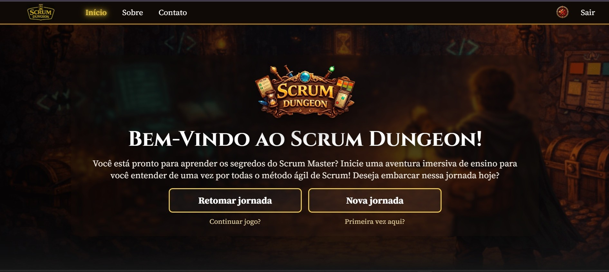
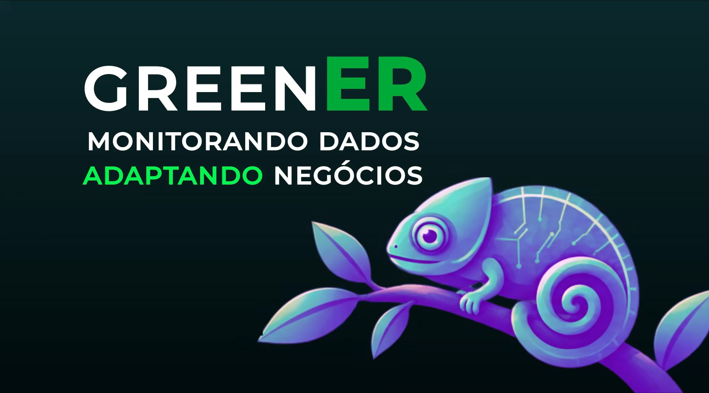

Aqui reúno os projetos desenvolvidos durante a formação, com seus
desafios, aprendizados e tecnologias utilizadas.
Projetos Acadêmicos
1DSM – 1º Sem. 2026
Projeto: Scrum Dungeon - Grupo OctopusCode
O premiado projeto Scrum
Dungeon foi desenvolvido como parte do Projeto de Aprendizagem
Baseada em Problemas (ABP) da FATEC. O objetivo do projeto era criar
um portal de ensino sobre Scrum, com questionários e avaliação. O
grupo OctopusCode desenvolveu uma plataforma gamificada baseada em
jogos de RPG e Rogue-like, com o objetivo de ensinar Scrum de forma
divertida e interativa.
Nesse projeto, fomos desafiados a colocar em prática os conhecimento
de HTML, CSS, JavaScript, Node.js, SQL. O objetivo do projeto era
criar um portal de ensino sobre Scrum, com questionários e
avaliação. O grupo OctopusCode desenvolveu uma plataforma gameficada
baseada em jogos de RPG e Rogue-like, com o objetivo de ensinar
Scrum de forma divertida e interativa.
Esse projeto foi considerado o
primeiro colocado da
turma.
Aqui atuei em várias
frentes, desde o código inicial de login/logout com o banco de
dados. FrontEnd da Tela de Certificado. E a concepção completa do
capítulo 3 do projeto, pensando desde o texto, interação com o
usuário, imagens, animações e conexão com a página de questionário.
Tecnologias utilizadas:
- HTML
- CSS
- Javascript
- Node.js
- PostgreSQL
- Git
Para conhecer o repositório do projeto click no
link
Conheça o vídeo de apresentação do projeto no
link
Para ver o projeto em funcionamento, clique na imagem abaixo:

2DSM – 2º Sem. 2026
Projeto GreenEr - Grupo Let:zApplin
O premiado projeto GreenER é uma aplicação desenvolvida em equipe no Projeto de
Aprendizagem Baseada em Problemas da FATEC.
A plataforma reúne indicadores de consumo energético e emissões
estimadas de CO₂e, permitindo acompanhar serviços digitais, comparar
seu impacto e simular cenários em diferentes regiões.
Minha atuação se concentrou no desenvolvimento e refinamento do
frontend com React, TypeScript e CSS, com foco em responsividade e
experiência mobile. Trabalhei na adaptação de dashboards, gráficos,
rankings e controles para telas menores, preservando a leitura dos
dados e das escalas. Também ajustei a interação por toque, o mapa de
serviços, os painéis de detalhes, os popups e a visualização em tela
cheia.
Participei da integração de funcionalidades, versionamento com Git e validação da aplicação em ambiente Docker. O projeto
fortaleceu minha experiência em transformar requisitos em interfaces
funcionais, investigar problemas de usabilidade e colaborar na
evolução de uma aplicação orientada a dados e sustentabilidade.
Este projeto foi premiado com a melhor apresentação da Feira de Tecnologia da FATEC - 2º semestre.
Tecnologias utilizadas:
- React
- CSS
- TypeScript
- Node.js
- PostgreSQL
- Docker
- MapLibre
- Recharts
- Git
Para conhecer o repositório do projeto click no
link
Clique na imagem e conheça o vídeo de apresentação do projeto:

Video Pitch 1º e 2º semestres
aqui entra o vídeo
3DSM – 1º Sem. 2027
Novas experiências e soluções serão adicionadas a esta coleção em
breve.
4DSM – 2º Sem. 2027
Novas experiências e soluções serão adicionadas a esta coleção em
breve.
5DSM – 1º Sem. 2028
Novas experiências e soluções serão adicionadas a esta coleção em
breve.
6DSM – 2º Sem. 2028
Novas experiências e soluções serão adicionadas a esta coleção em
breve.